The timeline gets a scroll bar of its own, drawn by the app like the rest of the timeline. It zooms as well as scrolls, and you can switch it between two kinds: a plain bar, and an overview of the whole sequence like Bitwig Studio's, with a line for each track and the sections by name. It goes under the timeline or above the ruler, as you choose. Below are comps of both kinds in Tactile and Aluminum, in their light looks and, dark, in your aqua. The timelines in the comps are drawn at the zoom they show: 12 bars across, the whole sequence, and 3½ bars.
The comps are pages over the main window comp (make.ps1 builds them; scroll.js and scroll.css add the bar). Click any picture for its page. The research on what other DAWs do is near the end.
A line for each track where its clips are, in its color. A closed folder is one line. Muted clips are faint. The sections (the tempo track's tags) are named across the top, with a mark where each starts. You also see the loop and the playhead, and, under the lines, where the selected clip's linked copies play, the way Visual Studio's scroll bar marks what a search found. What's outside the view is veiled. The view is a frame: drag it to move, or drag a grip at either end to zoom.
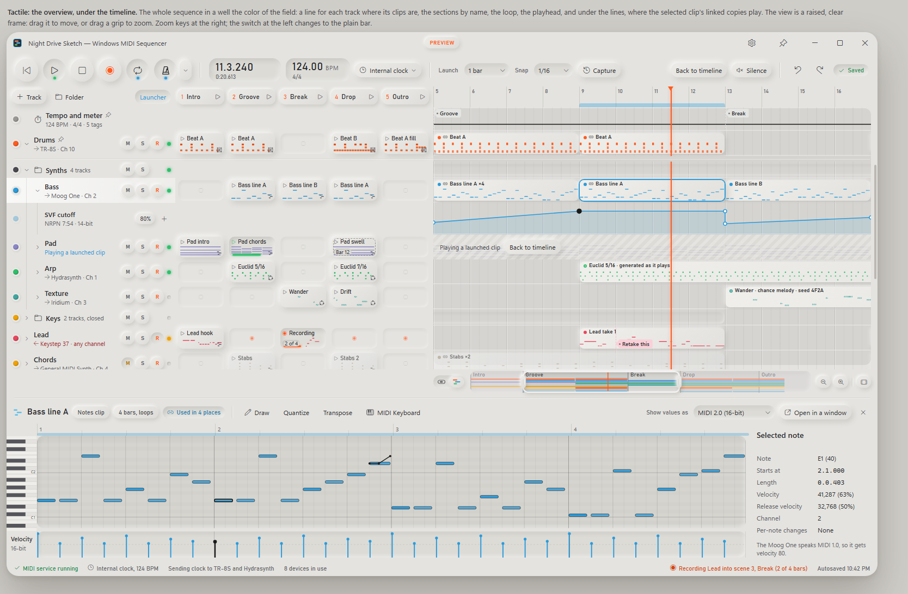
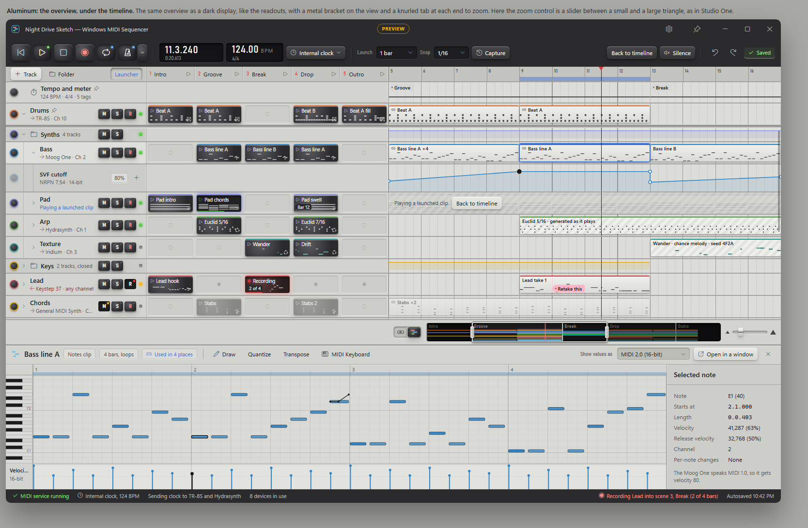
The same view and zoom with nothing else in the bar but the playhead's mark. The tooltip shows what pointing at an end tells you.
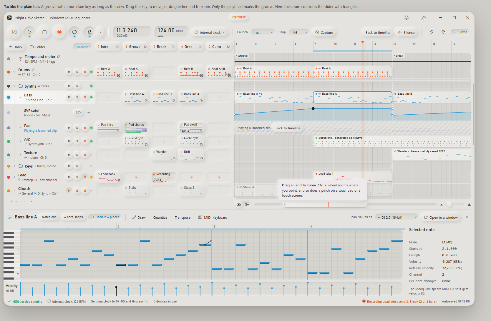
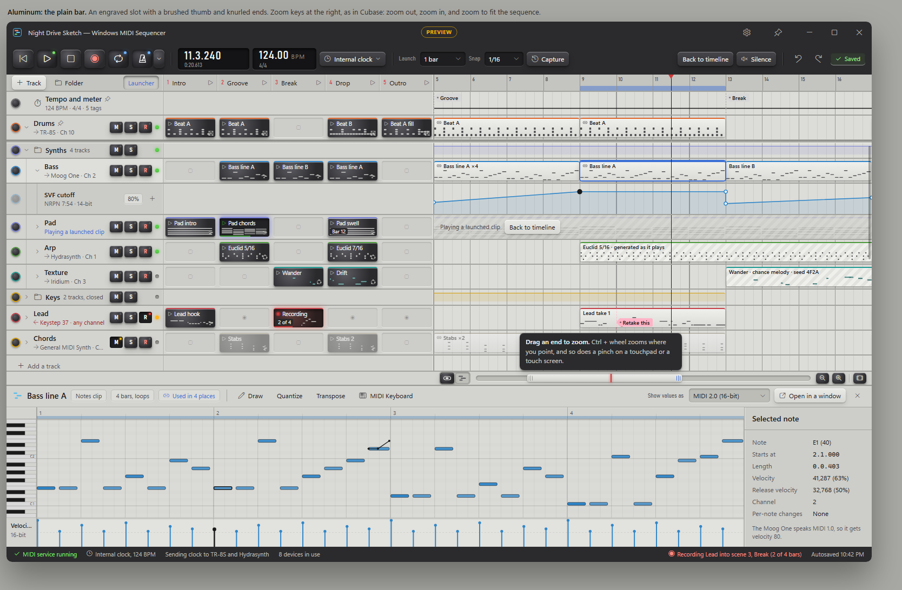
With the setting at the top, the overview lines up with the ruler and the timeline under it, and the zoom moves into the track list's toolbar, beside the switch, as Logic Pro puts its zoom above the tracks.
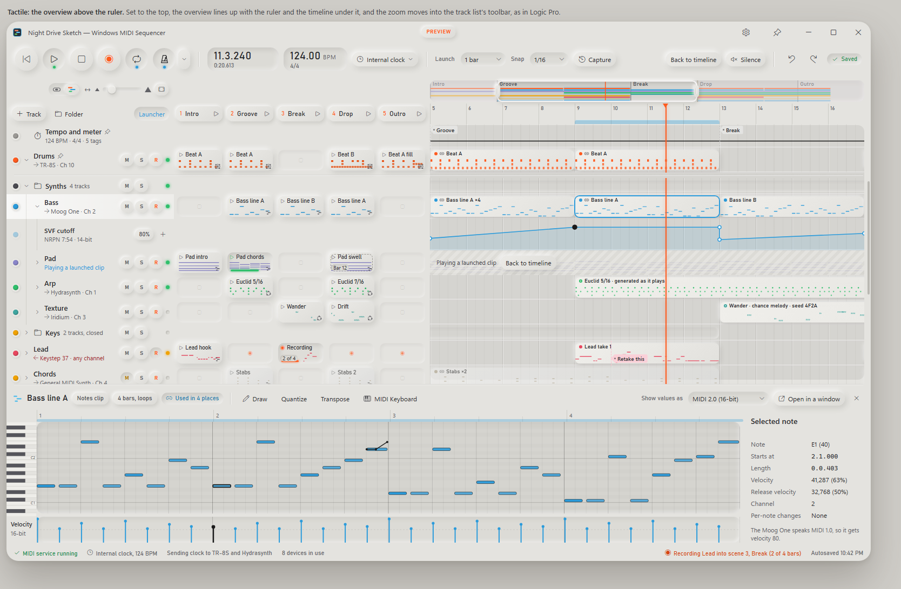
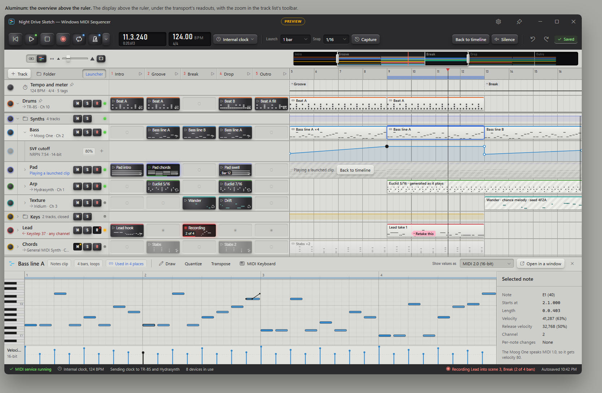
The same Tactile window at three zooms. Watch the view in the overview grow and shrink, the grid and the ruler get finer, and the clips spread out.
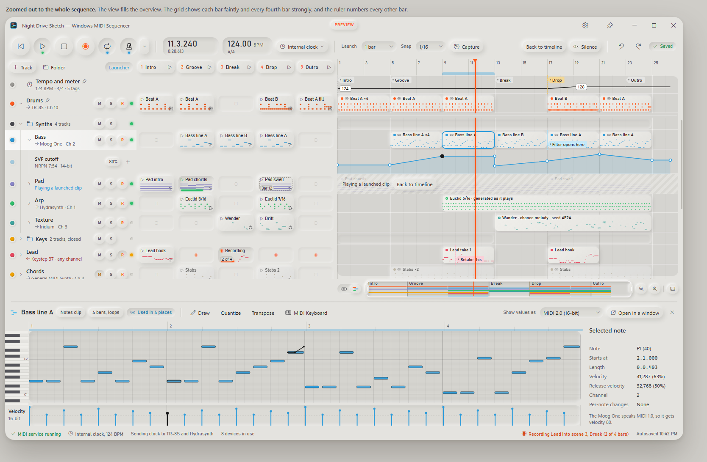
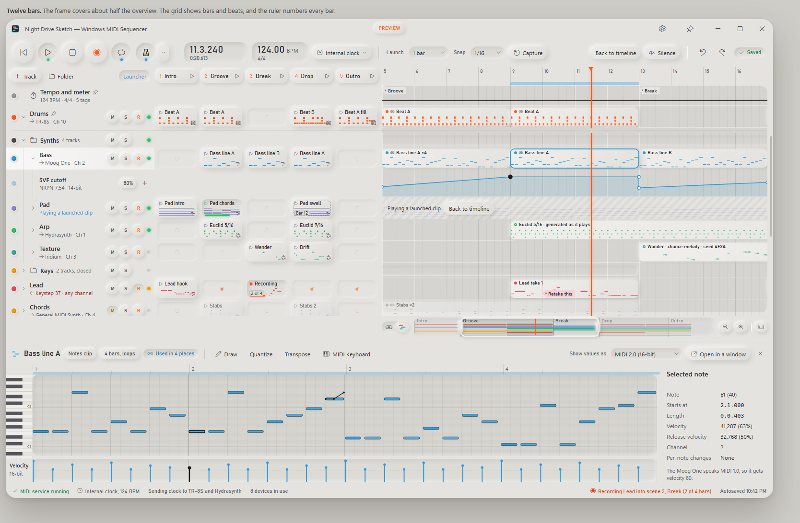
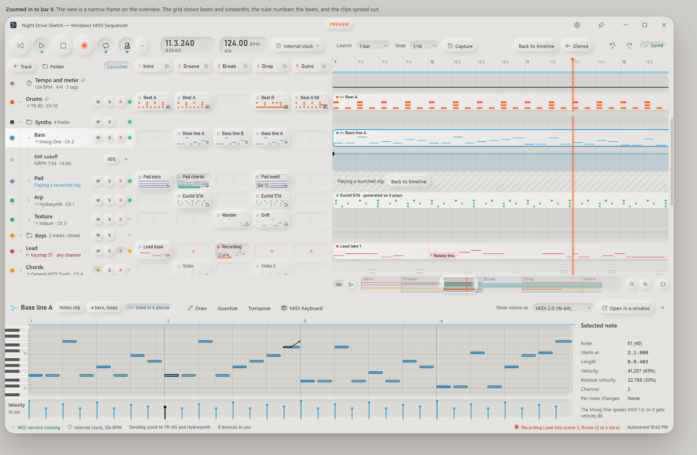
These crops are at 72%, so each shows the whole width of the timeline.
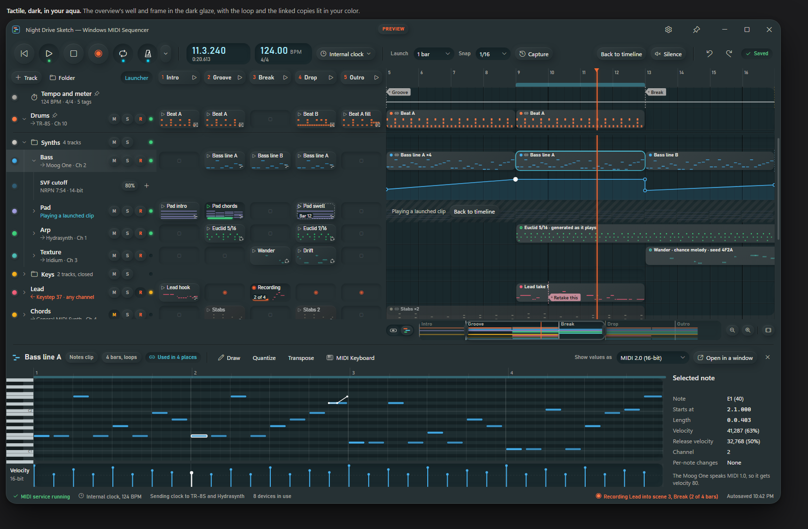
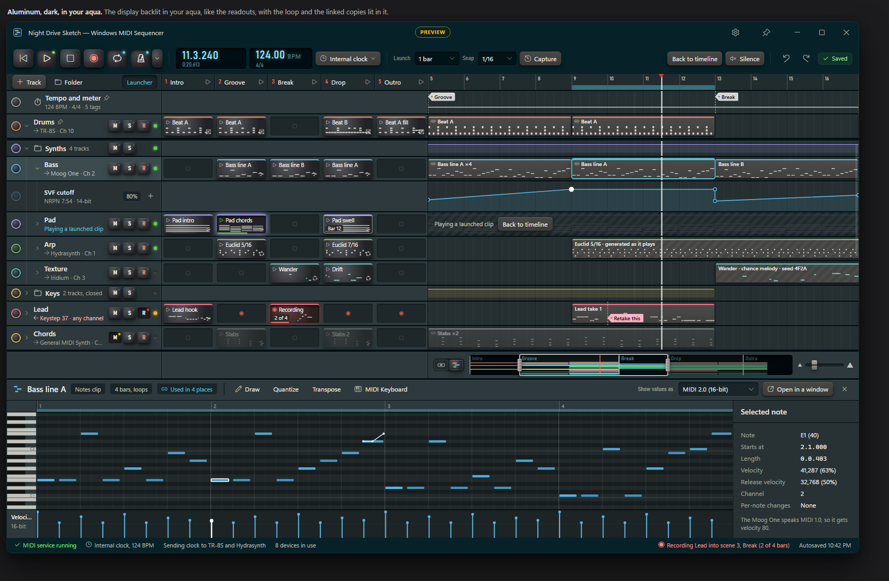
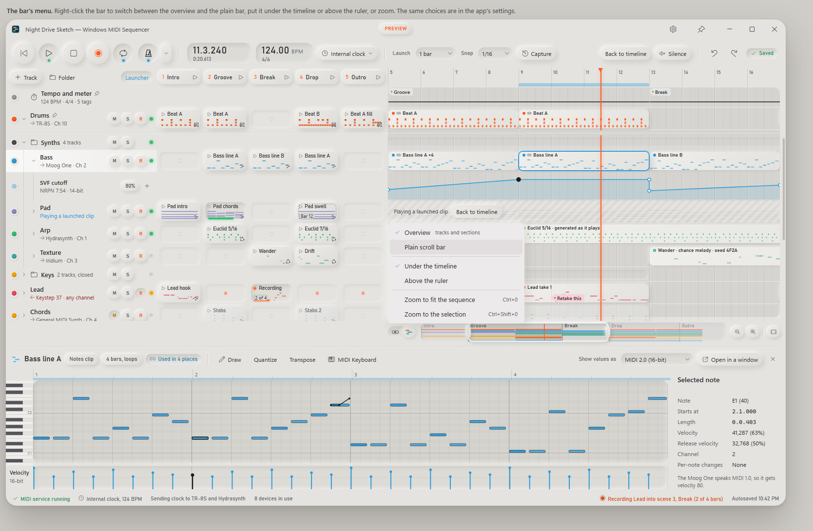
TimelineScrollBar: overview or plain; TimelineScrollBarPlace: bottom or top), shown in the app's settings with the other timeline options.Keys at the bar's end: zoom out, zoom in, zoom to fit, like the − and + at the ends of Cubase's zoom slider. One click, one step; the easiest to find and to hit with a finger.
A slider between triangles at the bar's end (Studio One): shows where the zoom is, and drags smoothly from the whole sequence to one beat. The triangles step it.
The slider in the track list's toolbar (Logic Pro): out of the timeline's way, which suits the bar above the ruler.
From vendor manuals and help pages where they could be read; anything from forums or secondary summaries says so. "Unverified" means the research couldn't confirm it either way. No GPL sources were used.
| App | Zoom with the wheel | Scroll in time | Pinch | Zoom control on screen | Drag the thumb's ends to zoom | Overview | Zoom keys |
|---|---|---|---|---|---|---|---|
| Cubase 13–15 | Ctrl + wheel, at the pointer; Ctrl+Shift + wheel for track height [1] | Shift + wheel | Not on a Mac trackpad; a third-party utility adds it (forum) [2] | Zoom sliders and presets at the bottom right, beside the scroll bar | No; an open feature request asks for it [3] | The overview line, at the top: drag or resize its box [4] | H and G; Shift+F fit; Alt+S selection |
| Studio One 6/7 | Ctrl+Shift + wheel; Ctrl + wheel zooms track height (secondary) [5] | Shift + wheel | Unverified | A wedge-shaped zoom slider at the bottom right, between triangles [6] | Unverified | None built in | None fixed |
| Logic Pro 11 | No wheel binding documented; zooms about the pointer, or the playhead when the pointer is near it [7] | — | Trackpad | Horizontal and vertical zoom sliders in the tracks area's menu bar | No | None | Cmd + arrows (secondary) |
| Ableton Live 12 | Ctrl/Cmd + wheel; Alt + wheel for track height [8] | — | Trackpad scroll with Ctrl/Cmd | None; the overview and the ruler zoom | No scroll bar | At the top: drag sideways to scroll, up or down to zoom, double-click to fit | + and −; Z selection; X back |
| Bitwig Studio 5 | Ctrl+Alt + wheel; drag the ruler up or down [9] | Drag the ruler sideways | Trackpad | None found | Unverified | At the bottom, as in your screenshot (not in the manual the research could read) | Ctrl+Plus, Ctrl+Minus |
| REAPER 7 | The wheel alone, at the pointer; remappable (forum) [10] | Shift + wheel | Unverified | None by default | Unverified | None | Remappable |
| Pro Tools | Alt + wheel, about the edit selection, not the pointer [11] | — | No | The zoom cluster in the Edit window's toolbar | Unverified | The Universe window, above the rulers [12] | R and T; Alt+F selection; Alt+A session |
| FL Studio | Ctrl + wheel, at the pointer; Alt + wheel for height [13] | — | Unverified | None (a menu) | Unverified | None; Ctrl + right-click shows the whole project for a moment (forum) | T and U; Ctrl+Shift+H fit (forum) |
| Premiere Pro | Alt + wheel (community) [14] | — | Unverified | The zoom scroll bar, under the timeline | Yes: "Drag the edges to zoom in or out of the timeline" [15] | None; the zoom scroll bar is it | = and −; \ fit |
| DaVinci Resolve | Alt + wheel (secondary) [16] | — | Unverified | A zoom slider under the timeline, with handles | Yes (secondary) | The Timeline Navigator, above the timeline [17] | Ctrl+= and −; Shift+Z fit |
| Final Cut Pro | None documented | — | Trackpad [18] | A slider in the Clip Appearance pop-up | Unverified | None | Cmd + Plus and Minus; Shift+Z fit |
PointerWheelChanged with the Control modifier. One handler covers both.ManipulationModes Scale, ManipulationDelta) [20], which come from touch only; a touchpad's pinch never produces them (community) [21]. InteractionTracker may pick up the touchpad too; that needs a try on real hardware.TimelineView, which owns the time axis (where the view starts, in ticks, and how many ticks a pixel is) and the vertical scroll. It draws the ruler, the lanes and the playhead with Win2D as now, keeps the pinned rows apart from the ones that scroll, and hosts the bar. The track headers and the launcher keep their own controls and follow its vertical scroll.TimelineScrollBar, drawn with Win2D through the theme engine. Each style draws its well, view, grips, veil and zoom controls from parts in its theme file (timeline.scrollbar.*, timeline.overview.*), the way the clips and launcher pads are drawn now, so Night drive, Tactile, Aluminum and Vellum each get their own without code of their own. The piano roll and the drum pattern editor can use the plain bar later for their own zoom.PointerWheelChanged for the wheel: Ctrl zooms, which also takes a touchpad's pinch, since Windows sends it as Ctrl + wheel; Shift or a horizontal wheel scrolls. Manipulation events (ManipulationModes TranslateX and Scale) for a touch screen's pinch and drag.TimelineScrollBar (overview or plain) and TimelineScrollBarPlace (bottom or top), each with the bar's menu and the app's settings to change it. The zoom and the view are saved with the sequence, as they are now.The overview under the timeline by default, with the plain bar a click away. Both kinds zoom by dragging an end, with Ctrl + wheel and with a pinch. Put keys at the bar's end (zoom out, zoom in, fit), the easiest to find and to touch; the slider is a close second if you'd rather see where the zoom is. Offer the top placement through the setting, for people who know an overview there from Live, Pro Tools or Cubase, with the zoom moving to the track list's toolbar.